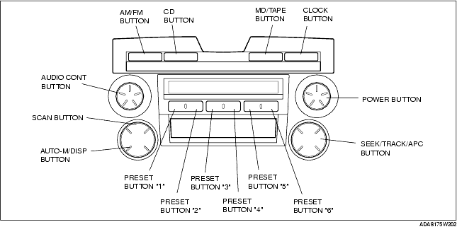
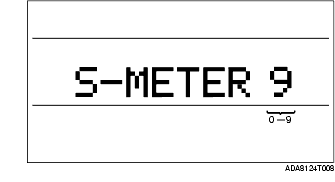

Diagnostic assist function
Structural View
Switch

LCD Inspection
1. With the audio on, first press the POWER button, then simultaneously press the SEEK button (upper) for approx. 1 s.
2. Inspect according to the following table:
3. Turn the audio off or the ignition switch to the LOCK position to stop the diagnostic assist function.
Button Inspection
1. With the audio on, press the POWER button and the CLOCK button simultaneously for approx. 1 s.
2. Inspect according to the following table:
3. Turn the audio off or the ignition switch to the LOCK position to stop the diagnostic assist function.
Speaker Inspection
1. With the audio on, press the POWER button and the AUTO-M button simultaneously for approx. 1 s.
2. Inspect according to the following table:
3. Turn the audio off or the ignition switch to the LOCK position to stop the diagnostic assist function.
Radio Reception Condition
1. With the audio on and while in radio mode, press the POWER button and preset button 2 simultaneously for approx. 1 s.
2. The diagnostic assist function displays the radio reception condition in 10 levels (0-9) to assist in determining the condition of the antenna, antenna feeders, and base unit (tuner).

3. Turn the audio off or the ignition switch to the LOCK position to stop the diagnostic assist function.